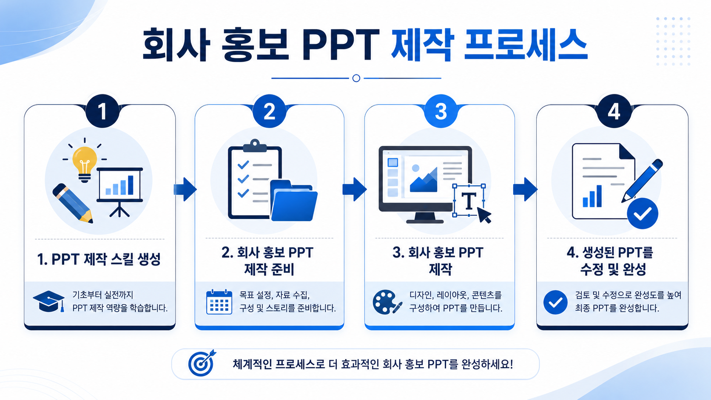
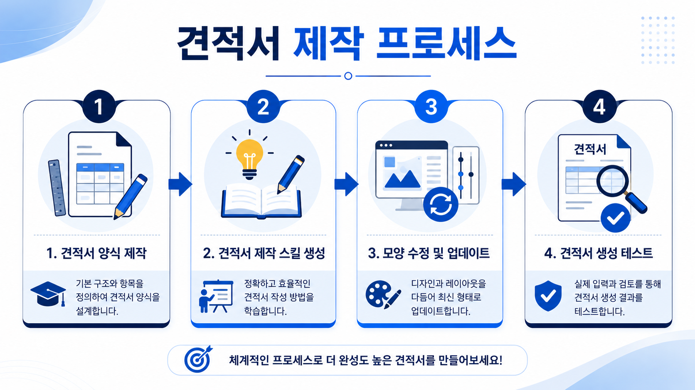
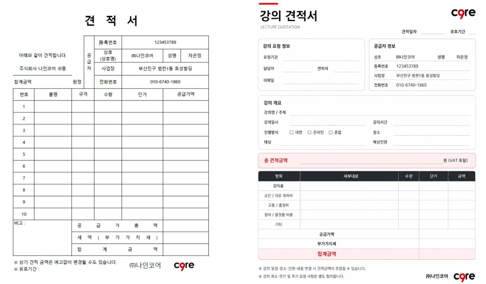
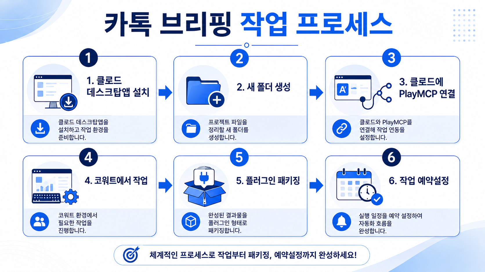
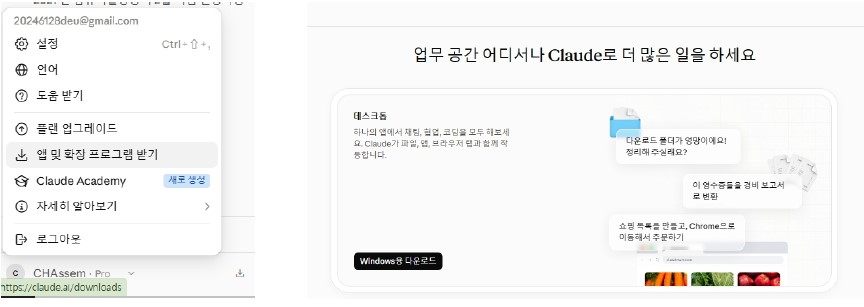
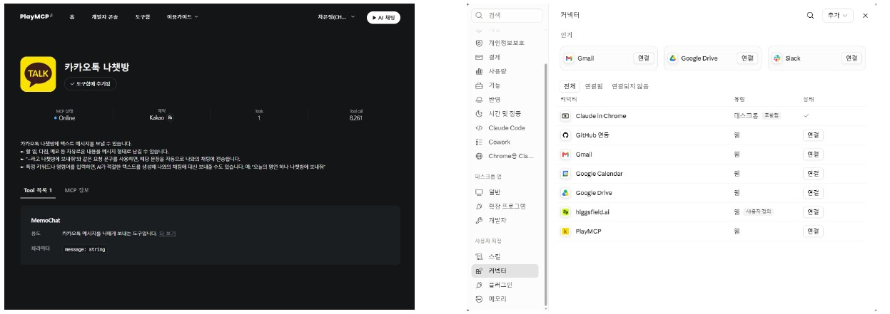
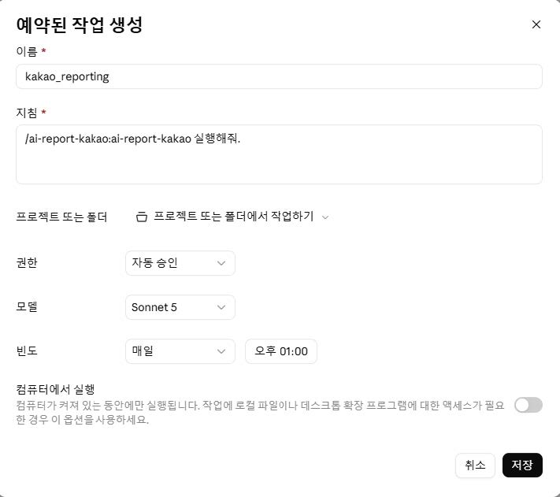

3시간 실습 과제
벤처 & 산학협력 기업 임직원 맞춤
생성형 AI를 활용한
사무자동화 스킬 & 플러그인
Claude 스킬 생성, (주)나인코어 스마트 견적서 패키징, PlayMCP 카카오톡 자동 브리핑까지 수업 중 사용되는 실제 프롬프트를 원클릭으로 복사하여 실습하세요.
STEP 01
회사 홍보 PPT 스킬
NotebookLM 분석 ➔ Editorial Minimal 스타일
STEP 02
Smart 견적서 스킬
(주)나인코어 단가표 ➔ 카톡 누락 검증
STEP 03
PlayMCP 카톡 브리핑
Cowork .docx 보고서 ➔ 매일 자동 예약
강의 개요 & 커리큘럼 요약
생성형 AI(Claude)를 활용한 3시간 사무자동화 교육 핵심 내용입니다.
📋 커리큘럼 핵심 내용 요약
1. 회사 홍보 PPT 제작하기
[PPT 제작 스킬 생성하기]
- NotebookLM으로 슬라이드 제작 및 홍보 PPT 내용/구성/디자인 확인
- KRX IR자료실(https://kind.krx.co.kr/)에서 참고 내용 수집
- 클로드에서 PPT 생성 스킬 생성 및 지속적 업데이트
- 회사 홍보 PPT 간단 워크시트 내용 작성하기
- 작성된 워크시트 바탕으로 PPT 스킬 사용 및 수정하기
2. 견적서 작성하기
[우리 회사의 견적서 양식 만들기]
- 기본 견적서 양식(PDF)을 클로드에서 수정 및 저장하기
- 클로드의 Skill Creator를 사용하여 견적서 만들기 스킬 생성
- 빠진 항목 및 미포함 내용 확인 메시지를 스킬에 추가
- 카톡 이미지 또는 메시지 내용으로 견적서 생성 및 테스트하기
3. 매일 카톡으로 브리핑 내용 받기
[PlayMCP & Cowork 연결 및 자동화]
- 클로드 데스크탑 앱 설치 및 프로젝트 작업폴더 지정
- PlayMCP 연결 및 카카오톡 브리지 설정
- Cowork에서 .docx 보고서 저장 ➔ 핵심 3가지 요약 카톡 전송
- 플러그인 패키징 및 매일 같은 시간 예약 작업(Schedule) 저장
📥 실습 파일 다운로드 & 참고 서식 링크
📄 서식 파일 다운로드
회사 홍보 PPT 간단 워크시트.hwp
한글(HWP) 서식 양식 파일
다운로드 💾
회사 홍보 PPT 간단 워크시트.docx
워드(DOCX) 서식 양식 파일
다운로드 💾
견적서양식.xlsx
기본 견적서 템플릿 엑셀 서식
다운로드 💾
견적서양식.pdf
기본 견적서 템플릿 PDF 서식
다운로드 💾
🌐 실습 사이트
Claude
Anthropic 대화형 AI 및 스킬 / MCP 환경
열기 ↗
ChatGPT
OpenAI 대화형 AI 서비스
열기 ↗
Gemini
Google 대화형 AI 서비스
열기 ↗
노트북LM디자인
NotebookLM 슬라이드 디자인 갤러리
열기 ↗
Google NotebookLM
AI 조사 도구 및 소스 분석
열기 ↗
PlayMCP
카카오톡 나에게 보내기 MCP 브리지
열기 ↗
getdesign.md
AI 코딩 에이전트용 디자인 가이드 모음
열기 ↗
KINO (KRX IR자료실)
한국거래소 기업 공시 & IR 자료 수집
열기 ↗
모듈 1
회사 홍보 PPT 스킬
회사 홍보 PPT 제작 실습 프롬프트
(단계1) PPT 생성 스킬 만들기 ➔ (단계2) 워크시트 작성 ➔ (단계3) PPT 생성 및 수정
모듈 1 워크플로우

📌 Step 1. PPT 생성 스킬 제작 및 업데이트 프롬프트
1. PPT 스킬 작성 시작 요청
PPT 슬라이드 작성과 관련된 스킬을 작성하려고해. 어떻게 시작할까?
2. PPT 디자인 스타일 설정 (Monochrome Editorial Minimal)
다음의 프롬프트로 제작되는 PPT 스타일을 설정하려고 해. 확인해봐.
#### PPT 스타일
Design Style:
Name: "Monochrome Editorial Minimal"
Concept: "モノクロ写真と極太コンデンスフォントを組み合わせた、雑誌風のミニマル・エディトリアルプレゼンデザイン"
#### PPT 스타일
Design Style:
Name: "Monochrome Editorial Minimal"
Concept: "モノクロ写真と極太コンデンスフォントを組み合わせた、雑誌風のミニマル・エディトリアルプレゼンデザイン"
3. 키워드 트리거 설정
PPT, 슬라이드 라고 입력 요청하면 PPT 스킬이 적용되도록 설정, 스킬 업데이트
4. 기본 슬라이드 수 (10개) 설정
기본적으로 슬라이드 수는 10개로 설정하고, 요청이 따로 있으면 요청에 따르도록 스킬 업데이트
5. 내용 상세 표시 수정
설명이 너무 간단하게 되어 있으니 내용 부분을 좀 더 표시되도록 수정, 스킬 업데이트
6. 8페이지 여백 오류 수정
8페이지 아래쪽 여백이 다른 슬라이드보다 작음, 스킬 수정 과 업데이트
7. 마지막 페이지 텍스트(이메일, URL) 수정
마지막 페이지, teacha99@gmail.com, chassem.ai.kr 텍스트로 수정, 스킬 저장 및 업데이트
8. 적용 트리거 및 이름 확인
현재 ppt스킬 적용 트리거와 ppt스킬의 이름은?
9. 이메일주소 및 URL 필수 추가 설정
ppt를 제작할 때 마지막 페이지에 앞서 요청했던 이메일주소와, URL를 무조건 추가되도록 스킬 수정 및 업데이트
10. PPT 스킬 zip파일 다운로드 요청
지금까지 설정한 PPT 스킬을 zip파일로 다운로드할 수 있도록 해줘.
📌 Step 2. 등록한 PPT 제작 스킬을 사용하여 회사홍보 PPT 제작 및 수정하기
1. PPT 제작 시작 문의 프롬프트
회사 홍보 PPT를 함께 제작하고 싶어. 어떤 것부터 시작하면 좋을까?
2. 워크시트에 정리한 내용 순서대로 전송하기
아래 정리된 워크시트 내용을 순서대로 반영해서 PPT 슬라이드를 제작해줘.
1. 회사명 / 업종 / 설립연도: (주)나인코어 / AI 교육 및 사무자동화 / 2024년
2. 핵심 사업 내용: 생성형 AI 사무자동화 클래스, 3D프린터 출력, 맞춤형 챗봇/스킬 제작
3. 핵심 강점 및 차별점: 실무 직결형 Claude MCP & Skill 패키징, 100% 현장 적용형 교육
4. 주요 실적 및 숫자: 산학협력 및 벤처기업 교육 50회 이상, 누적 수강생 1,500명
5. 비전/미션: AI 기술로 벤처기업의 반복 업무 90% 자동화 달성
6. 로고 및 브랜드 컬러: 다크모드 기반 주황/블루 포인트 컬러
모듈 2
Smart 견적서 스킬
Smart 견적서 작성 스킬 실습 프롬프트
(단계1) 우리 회사 견적서 양식 만들기 ➔ (단계2) 우리 회사 견적 스킬 생성 ➔ (단계3) 카톡 메시지 테스트
모듈 2 워크플로우

📌 Step 1. 우리 회사 견적서 양식 만들기

1. 양식 가독성 수정 문의
업로드한 견적서 양식을 가독성이 높게 수정하고 싶은데 어떻게 시작할까?
2. 시안 작성 요청
시안을 만들어줘.
3. 강의요청 필수 항목으로 수정
강의요청에 대한 견적서를 작성하는 데 필요한 항목으로 수정해줘.
4. 금액표시 및 비고/별도항목 정돈
견적표 아래에 공급가액과 부가가치세, 합계급액을 추가하여 표시, 견적 조건/비고 항목 삭제, 아래 별도로 표시된 공급가액, 부가가치세,
합계급액 삭제
5. 레이아웃 정렬 및 불필요한 선 삭제
강의 요청 정보, 공급자 정보, 강의 개요 항목 내 세로정렬상태 조정, 불필요한 선 삭제
📌 Step 2. 우리 회사 견적 스킬 생성 및 수정 지시
1. 견적 스킬 생성 기본 지시문 (Skill Creator용)
스킬 크리에이터를 써서 견적 스킬을 만들어줘.
내가 메뉴, 가격, 진행 방식을 정리해줄테니
카톡 문의 붙여넣으면 견적 답변, 견적서 PDF까지 만들어주는 스킬로 만들어줘.
[회사 정보]
* 상호 : (주)나인코어 (부산진구 범천1동 효성빌딩)
* 원데이클래스(생성형AI로 클릭커만들기) : 1인 45,000원, 2시간 소요
* 3D프린터 출력 : 15,000원 (1인 1개 기준)
* 단체 진행 도우미 : 10인 이상 시 30,000원 추가
* 다과 세트(선택) : 1인 5,000원 (커피, 차, 쿠키)
* 최소 인원 : 4명부터 단체 예약 가능
* 부가세 별도 : 10%
* 예약금 : 전체 금액의 30%
* 완성품 수령 : 강의 진행 후 2~3주
[말투]
친근한 존댓말, "문의 주셔서 감사합니다"톤으로 시작.
애매한 문의면 "보내주신 내용 기준으로 정리했다"고 말하고
부족한 정보(날짜, 시간대, 다과 포함 여부)는 마지막에 정중히 되묻기.
[작동 방식]
카톡 문의 내용(캡쳐 이미지 또는 텍스트)을 올리고 "강의 견적 뽑아줘"라고 하면 이 스킬이 작동하도록 만들어줘.
2. 견적서 모양 수정 & 안내사항 추가 프롬프트
[견적서 모양 수정]
* 처음 업로드한 양식의 로고로 수정필요
* 오른쪽 위의 유효기간 날짜 아래 선 길이 조정
* 견적일자, 유효기간 정렬상태 수정
* 견적서 아래 안내사항은 모두 같은 스타일로 통일
[견적서 아래 안내사항 추가]
* 취소 및 환불 규정 : 클래스 7일 전까지 취소 시 예약금 전약 환불, 3일 전까지 취소 시 예약금의 50% 환불, 2일 전부터는 환불이 불가합니다.
* 처음 업로드한 양식의 로고로 수정필요
* 오른쪽 위의 유효기간 날짜 아래 선 길이 조정
* 견적일자, 유효기간 정렬상태 수정
* 견적서 아래 안내사항은 모두 같은 스타일로 통일
[견적서 아래 안내사항 추가]
* 취소 및 환불 규정 : 클래스 7일 전까지 취소 시 예약금 전약 환불, 3일 전까지 취소 시 예약금의 50% 환불, 2일 전부터는 환불이 불가합니다.
3. 누락/미포함 항목 정리 & 친근한 확인 문구 스킬 추가 지시
견적서가 완성된 후, 빠진 항목이나 미포함이어서 체크해야할 내용이 있으면 정리해줘.
메세지로 바로 보낼 수 있도록 친근한 말투로 확인할 수 있는 문구를 작성하는 내용을 스킬 마지막에 추가해줘.📌 Step 3. 실습용 카카오톡 문의 메시지 (스킬 테스트용)
실습용 카톡 메시지 예시 (부산체험학습센터 전해선 팀장)
안녕하세요!
중학생 진로 체험학습으로 단체 클릭커 제작 클래스를 알아보는 중입니다.
10명 정도 평일에 가능한가요?
부산체험학습센터
전해선 팀장
강의 견적서 뽑아줘.
중학생 진로 체험학습으로 단체 클릭커 제작 클래스를 알아보는 중입니다.
10명 정도 평일에 가능한가요?
부산체험학습센터
전해선 팀장
강의 견적서 뽑아줘.
모듈 3
PlayMCP 카톡 브리핑
PlayMCP & Cowork 카톡 브리핑 프롬프트
Claude Desktop 설치 ➔ 전용 새폴더 생성 ➔ Cowork .docx 저장 ➔ PlayMCP 카톡 발송 ➔ 플러그인 패키징 & 예약
모듈 3 워크플로우

📌 Step 1. 클로드 데스크탑 앱 설치
Claude Desktop 앱 설치 & 전용 새폴더 생성
1. 크롬 브라우저에서 Claude Desktop App 검색 후 공식 웹사이트에서 다운로드하여 설치합니다.
2. 내 컴퓨터(바탕화면 등)에 카톡 자동화 및 보고서 저장을 위한 전용 새 작업폴더 (예: mcp_workspace)를 생성합니다.
2. 내 컴퓨터(바탕화면 등)에 카톡 자동화 및 보고서 저장을 위한 전용 새 작업폴더 (예: mcp_workspace)를 생성합니다.

📌 Step 2. PlayMCP 서비스 연결하기
PlayMCP 카카오톡 연결 & 연동 가이드
1. PlayMCP 서비스 페이지 ↗에 접속하여 회원가입 (카카오톡 아이디와 동일하면
편함)
2. 전체 서비스 내용 중 '카카오톡 나쳇방'을 클릭하여 도구함에 추가
3. 클로드 데스크탑 앱의 설정 ➔ 커넥터에서 'PlayMCP'를 추가 및 연결 ➔ 모든 권한을 허용으로 설정
2. 전체 서비스 내용 중 '카카오톡 나쳇방'을 클릭하여 도구함에 추가
3. 클로드 데스크탑 앱의 설정 ➔ 커넥터에서 'PlayMCP'를 추가 및 연결 ➔ 모든 권한을 허용으로 설정

📌 Step 3. Cowork와 PlayMCP 활용하여 매일 카톡으로 보고서 받기
1. Cowork 작업폴더 보고서(.docx) 작성 프롬프트
'생성형AI'관련 주제로 지난 24시간 동안의 내용을 웹 검색하여 조사한 후, 상세한 보고서를 3장 내외로 .docx파일로 만들어서 지금 작업하고 있는 폴더에 저장해줘.
2. PlayMCP 카카오톡 핵심 3가지 요약 발송 프롬프트
보고서 내용 중 핵심내용 3가지를 요약하여 카카오톡으로 보내줘.
📌 Step 4. 나만의 카톡 브리핑 플러그인 패키징
1. 카카오톡 브리핑 플러그인 패키징 프롬프트
지금까지 한 작업을 플러그인으로 패키징 해줘.
2. 플러그인 / 스킬 실행 테스트
/{생성된 플러그인 또는 스킬 이름} 실행해줘.
📌 Step 5. 매일 같은 시간 자동 브리핑 예약(Schedule) 등록
매일 지정 시각 자동 브리핑 예약 지침 (Schedule)
/ai-report-kakao 실행해줘.

참고 영상
유튜브 시청 가이드
실습 참고 유튜브 영상
생성형 AI 사무자동화 과정 주요 내용 및 데모 시청용 유튜브 영상 모음입니다.
🎬 Item 1. 스킬 및 플러그인 활용
AI를 활용한 PPT제작 및 스킬 생성
유튜브에서 보기 ↗
다양한 상황별 스킬의 활용
유튜브에서 보기 ↗
📈 Item 2. 주식 카톡MCP
Claude for Chrome 및 MCP 활용
유튜브에서 보기 ↗
보유주식 관련 정보 취합 및 MCP 활용
유튜브에서 보기 ↗